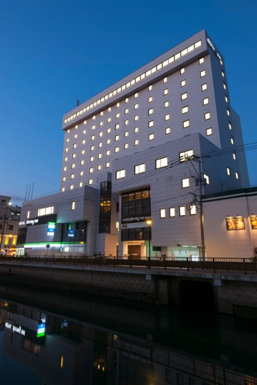
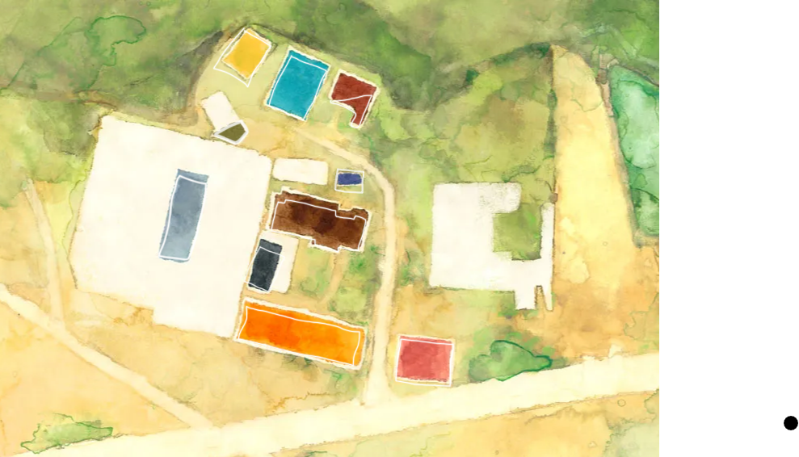
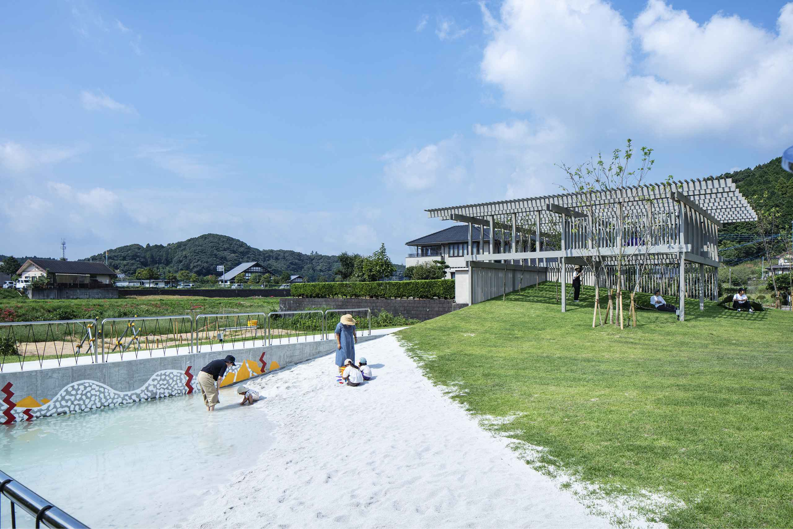
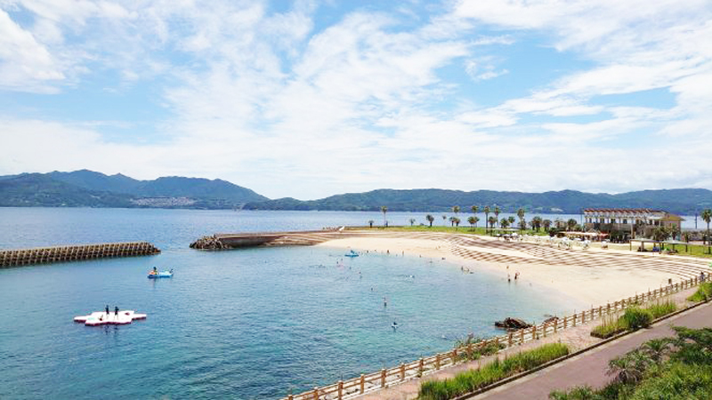
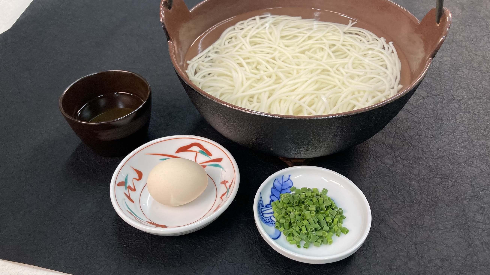
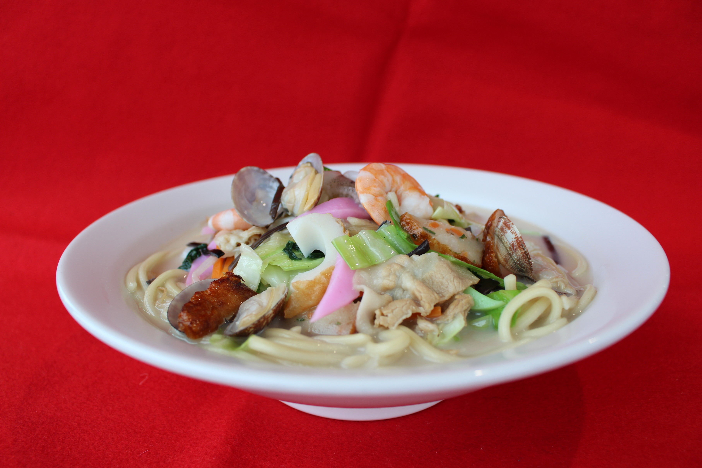
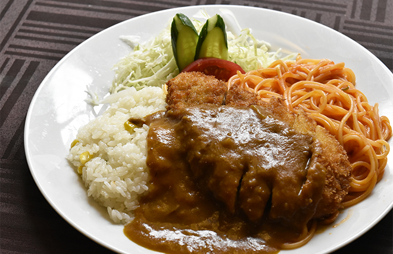
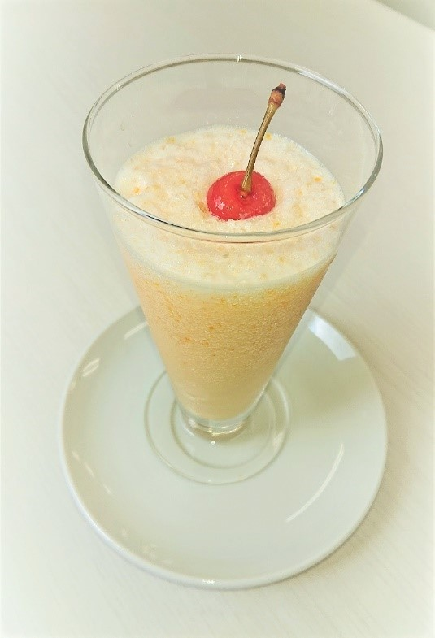
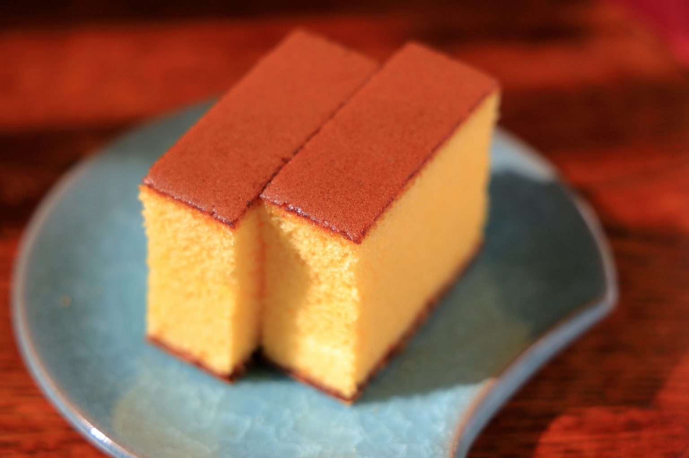
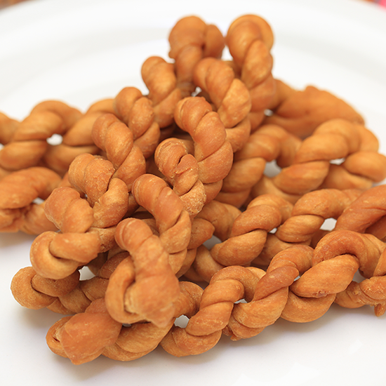

佐賀・長崎 2026
旅のテーマ
リフレッシュ休暇。 初日は嬉野温泉で休み、2日目は波佐見焼を見てから長崎へ。 長崎では中華街周辺を拠点に、街歩き・ご当地朝食・海を楽しむ。
天気予報
リンク集
ホテル
ホテル桜 嬉野
7/15宿泊。夕朝食付き。開業3周年記念フェア。

ドーミーイン長崎新地中華街
7/16宿泊。朝食付き。大浴場、夜鳴きそば、ご当地朝食。
ホテルJALシティ長崎
7/17、7/18宿泊。中華街近く。
飲食店
ツル茶ん
ミルクセーキ発祥。思案橋エリア。最有力候補。
プリムローズ
JALシティ徒歩圏の洋食店。評判良好。
ニッキー・アースティン
トルコライス有名店。ボリューム大きめ。
多ら福 亜紗
地魚と地酒。一人利用しやすい。
魚店亜紗
長崎駅近く。刺しゃぶ、五島うどん。
その他

西の原
波佐見焼、カフェ、古い製陶所跡の散策。

HIROPPA
マルヒロの公園・ショップ・カフェ。西の原から徒歩圏。

高島海水浴場
晴れた日の候補。長崎港から船で行く離島のビーチ。
予約済み・決定済み
| 日付 | 内容 | メモ |
|---|---|---|
| 7/15（水） | 新神戸 09:06 → 博多 11:26 | スマートEX／山陽新幹線 |
| 7/15（水） | 博多 12:54 → 嬉野温泉 14:03 | リレーかもめ29号 → かもめ29号 |
| 7/15（水） | ホテル桜 嬉野 | 夕朝食付き。開業3周年記念フェア：ふぐ、まぐろ寿司、嬉野抹茶スイーツなど。 |
| 7/16（木） | 嬉野温泉 16:04 → 長崎 16:28 | かもめ37号 |
| 7/16（木） | ドーミーイン長崎新地中華街 | 朝食付き。皿うどん、ハトシ、中華粥、雲仙ハムなど。 |
| 7/17（金） | JALシティ長崎 | スタンダードシングル（朝食付き。アーリーチェックイン13時／レイトチェックアウト12時） |
| 7/18（土） | JALシティ長崎 | スタンダードシングル（朝食なし） |
| 7/19（日） | 長崎 14:40 → 伊丹 15:55 | JAL2376便 |
Day 1：7/15（水） 嬉野温泉へ
09:06 新神戸 発
11:26 博多 着
昼 博多駅で軽めの昼食
12:54 博多 発（リレーかもめ29号）
13:58 武雄温泉 発（かもめ29号）
14:03 嬉野温泉 着
14:30 ホテル桜 嬉野チェックイン
夜 ホテル桜 嬉野泊
Day 2：7/16（木） 波佐見焼と長崎入り
朝 ホテルで朝食。チェックアウト後、荷物をホテルに預ける。
10:04 嬉野 発（西肥バス）
10:20 西の原 着
午前〜午後 西の原、カフェ、HIROPPA周辺を散策。
14:18 西の原 発（西肥バス）
14:34 嬉野 着。ホテルで荷物回収。
夕方 タクシーまたはバスで嬉野温泉駅へ。
16:04 嬉野温泉 発（かもめ37号）
16:28 長崎 着
17:00 ドーミーイン長崎新地中華街 チェックイン
夜 ドーミーイン長崎新地中華街泊
Day 3：7/17（金） 長崎：街歩き
朝 ドーミーインのご当地朝食。チェックアウト後、荷物をホテルに預ける。
午前〜午後 未定：市内散策・喫茶店・トルコライス候補。
13:00 JALシティ長崎 チェックイン
夕方
夜 JALシティ長崎泊（スタンダードシングル）
Day 4：7/18（土） 長崎：海
晴れプラン
- 高島海水浴場
- フェリー：長崎 8:50発 → 高島 9:24着、高島 15:00発 → 長崎 15:36着（時刻表）
- 伊王島
- 港周辺散歩
雨プラン
- 出島
- 長崎県美術館
- 喫茶店・カフェ巡り
朝 JALシティ長崎で朝食。
午前〜午後
夕方
夜 JALシティ長崎泊（スタンダードシングル）
Day 5：7/19（日） 長崎：最終日
朝 ホテル付近のカフェなどで朝食。
午前 新地中華街・出島・眼鏡橋周辺を散策。
12:00 JALシティ長崎 チェックアウト。
12:10頃 新地中華街から空港リムジンバス。
13:00頃 長崎空港到着。ランチ・展望デッキ・お土産。
14:40 長崎 発（JAL2376便）
15:55 伊丹 着
食べたいものメモ
麺類

五島うどん
ちゃんぽんご当地料理・おかず

トルコライス- 角煮まん
- 中華粥
- 海鮮
デザート

ミルクセーキ
カステラ
よりより